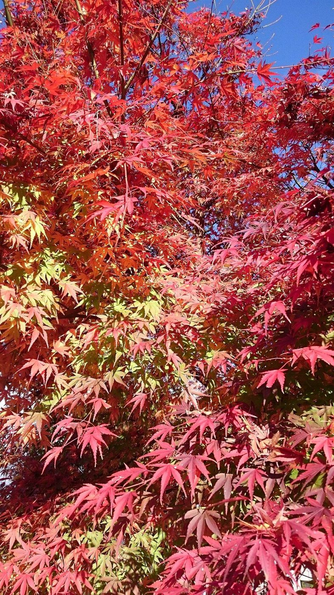

気取らずに入れそうな雰囲気で、ひとりでも気軽に立ち寄れそうです。
実際のお客様の声ではなく、創作のイメージ例です。Avis
口コミ
このページの声は、実際のお客様の声ではなく、サイトの雰囲気をお伝えするための創作のイメージ例です。
家族の記念日に、少し背筋を伸ばして過ごせるお店だと嬉しいです。
実際のお客様の声ではなく、創作のイメージ例です。足利に出かけたら、また寄りたくなる一軒になりそうです。
実際のお客様の声ではなく、創作のイメージ例です。

Avis
このページの声は、実際のお客様の声ではなく、サイトの雰囲気をお伝えするための創作のイメージ例です。
気取らずに入れそうな雰囲気で、ひとりでも気軽に立ち寄れそうです。
実際のお客様の声ではなく、創作のイメージ例です。家族の記念日に、少し背筋を伸ばして過ごせるお店だと嬉しいです。
実際のお客様の声ではなく、創作のイメージ例です。足利に出かけたら、また寄りたくなる一軒になりそうです。
実際のお客様の声ではなく、創作のイメージ例です。